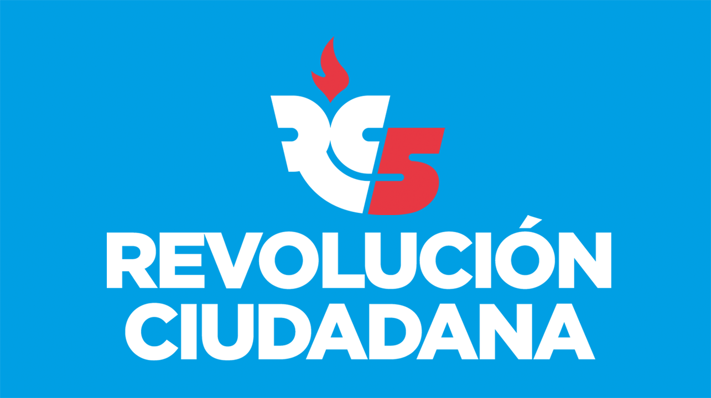
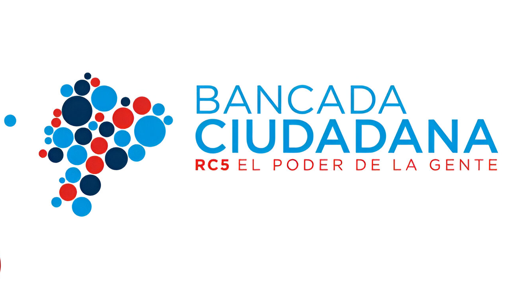

<ion-header class="ion-no-border" [translucent]="true">
  <ion-toolbar class="tolbar1">
    <div class="header-content">
      
    </div>
  </ion-toolbar>

  <div class="contenedor-superpuesto">
    <ion-toolbar class="tolbar2">
      <div class="cuadrado-con-texto">
        <p>LA EVOLUCIÓN DE LA RC5</p>
      </div>
    </ion-toolbar>
  </div>
</ion-header>

<ion-content [scrollY]="true">
  <div style="margin-top: 5px;" class="contenido">
    <div style="margin-top: 10px !important;" class="cuadro-centrado-imagen">
      
    </div>
    <div  style="margin-top: 190px !important;" class="cuadro-centrado-imagen">
      
    </div>
    <div class="social-media-container">
      <a data-width="340" data-height="500" class="twitter-timeline"
        href="https://twitter.com/MashiRafael?ref_src=twsrc%5Etfw">Tweets De Rafael
        Correa</a>
    </div>
  </div>
</ion-content>

<div class="container">
  <div (click)="abrirMenu()" class="left-square square">
    <i class="fas fa-list" style="font-size: 30px;color:#003365"></i>
  </div>
  <div class="circle">
      <i class="fas fa-home" style="font-size: 50px;color:#003365" ></i>
  </div>
  <div  class="right-square square">
    <i class="fas fa-reply" style="font-size: 30px;color:#003365"></i>
  </div>
  
</div>

